Lab 2: Multiplexed 7-Segment Display
Introduction
In this lab, I multiplexed a dual 7-segment display using the single 7-segment display module from Lab 1. I also designed and built a keypad scanning module capable of reading multiple simultaneous keypresses in preparation for Lab 3.
Design and Calculations
In this lab, care had to be taken to ensure that current draw from the display did not exceed the maximum ratings of the FPGA. The table below taken from the datasheet indicates that the maximum current draw of the I/O pins is 8mA, whether sourcing or sinking current.
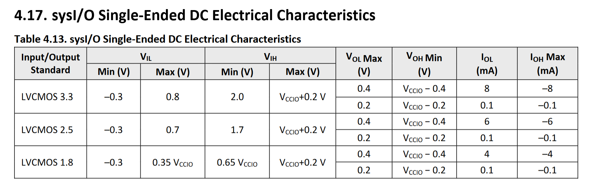
Multiplexed 7-Segment Display
To drive the dual 7-segment display, 3906 PNP transistors were placed between +Vcc and the anodes of each digit, and current-limiting resistors were placed between the cathodes of each segment and the FPGA pins. Current-limiting resistors were also connected to the base pins of the transistors.
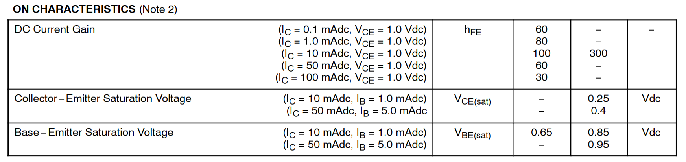
Since we’re using the transistor as a switch, we’ll assume it’s in saturation. When the transistor is in saturation, \(I_C\) = 50mA, and \(I_B\) = 5mA, then \(V_\mathrm{CE}\) = 0.4V and \(V_\mathrm{BE}\) = 0.95V. We already know the forward voltage of the segments on the display is 2V. A basic schematic looks like:
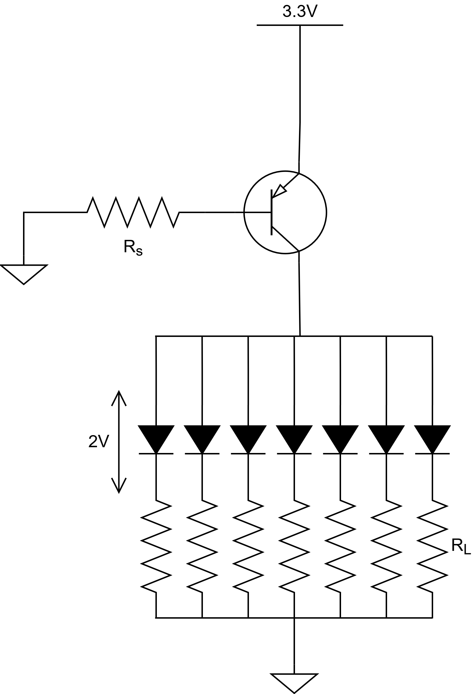
\(R_s\) is a standard resistance value that can be left as-is. For \(R_L\), 126 Ohms is not a standard resistance value, so we’ll pick the closest value of 150 Ohms instead.
We’ll also need to multiplex the display at a suitable rate so that the digits neither flicker nor bleed together. A good frequency to target is 120Hz, which is high enough that the naked eye cannot perceive flickering while also being low enough to prevent bleeding. We’ll need to set the MAXCOUNT value of the counter such that the display refreshes 120 times per second.
Keypad
To scan the 4x4 keypad, we’ll use an open-drain output to drive the rows of the keypad low so that we can detect multiple keypresses without any issue. The transistors are switching the low side of the load this time, so we’ll need to use an NPN. The characteristics of the 3904 NPN transistor are shown in the table below.
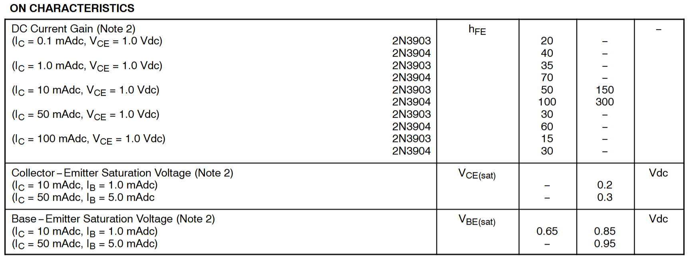
When the transistor is in saturation, \(I_C\) = 10mA, and \(I_B\) = 1mA, then \(V_\mathrm{CE}\) = 0.2V and \(V_\mathrm{BE}\) = 0.85V. The schematic is like the one for the multiplexed 7-segment display, but with the transistor on the low side and the load replaced with a switch.
\(R_s\) is the series resistance connected to the base of the transistor and \(R_p\) is the pullup resistor to Vcc. Neither calculated values were standard resistance values, so the closest ones were picked instead.
The specifications say to target a blinking rate of 2 Hz, and because there are 4 states, each output must last 0.125 seconds. Thus, SCAN_DELAY should be \(24 \mathrm{MHz} \cdot 0.125 \mathrm{s} = 3000000\).
Technical Documentation
Note: The two different deliverables (7-segment display and keypad scanner) were demonstrated as separate modules for this lab because there were not enough FPGA pins to run both simultaneously.
Block Diagrams
Multiplexed 7-Segment Display
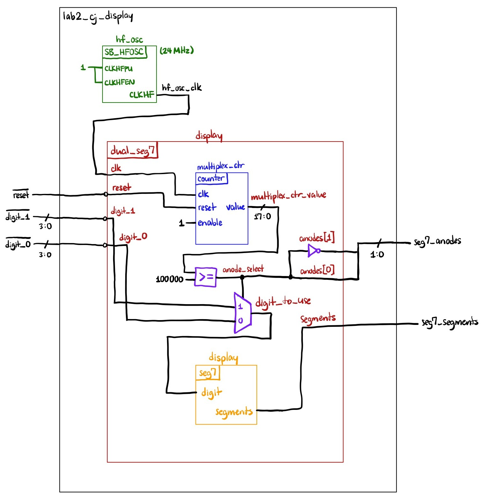
The figure above shows the block diagram for the multiplexed 7-segment display. The multiplexing logic is contained in the dual_seg7 module, which uses a counter to switch between displaying the different digits. When the counter is below half of its maximum count, a multiplexer feeds digit_0 into the digit_to_use node and drives anode[0] high (PNP transistors are active low). When the counter is above half of its maximum count, the multiplexer selects digit_1 instead and toggles the anodes so that anode[1] is driven high. The seg7 module from Lab 1 encodes the selected digit as segments on a single digit 7-segment display.
Keypad Scanner
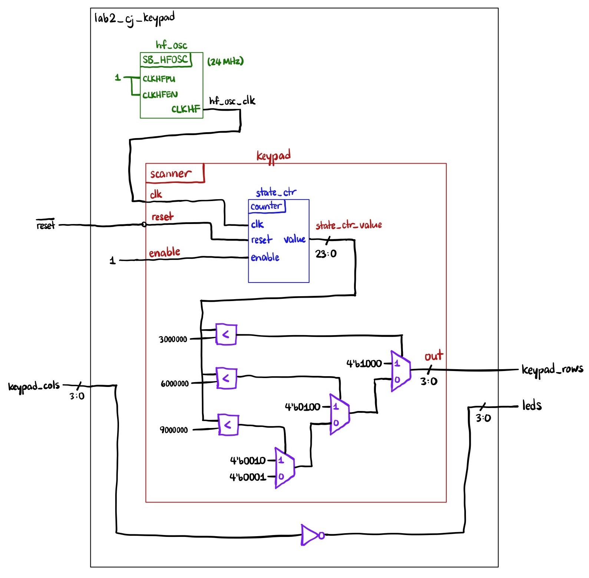
The figure above shows the block diagram for the keypad scanner circuit. The logic responsible for switching between the different outputs is implemented in the counter, comparison blocks, and muxes. When the counter is below 1/4 of its maximum count, the muxes select the first output. Otherwise, if the counter is between 1/4 and 2/4 of its maximum count, the muxes select the second output, and so on. The values read from the keypad columns are simply driven back out onto the LEDs (after being inverted since the inputs are active low).
Schematics
Multiplexed 7-Segment Display
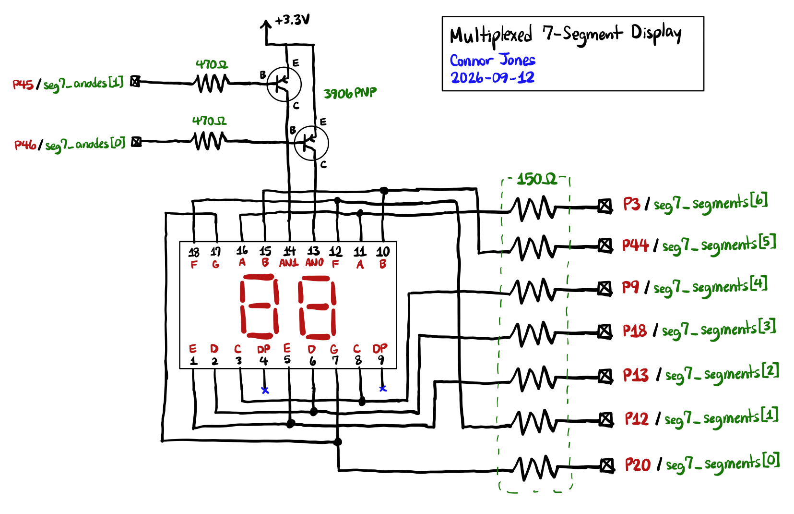
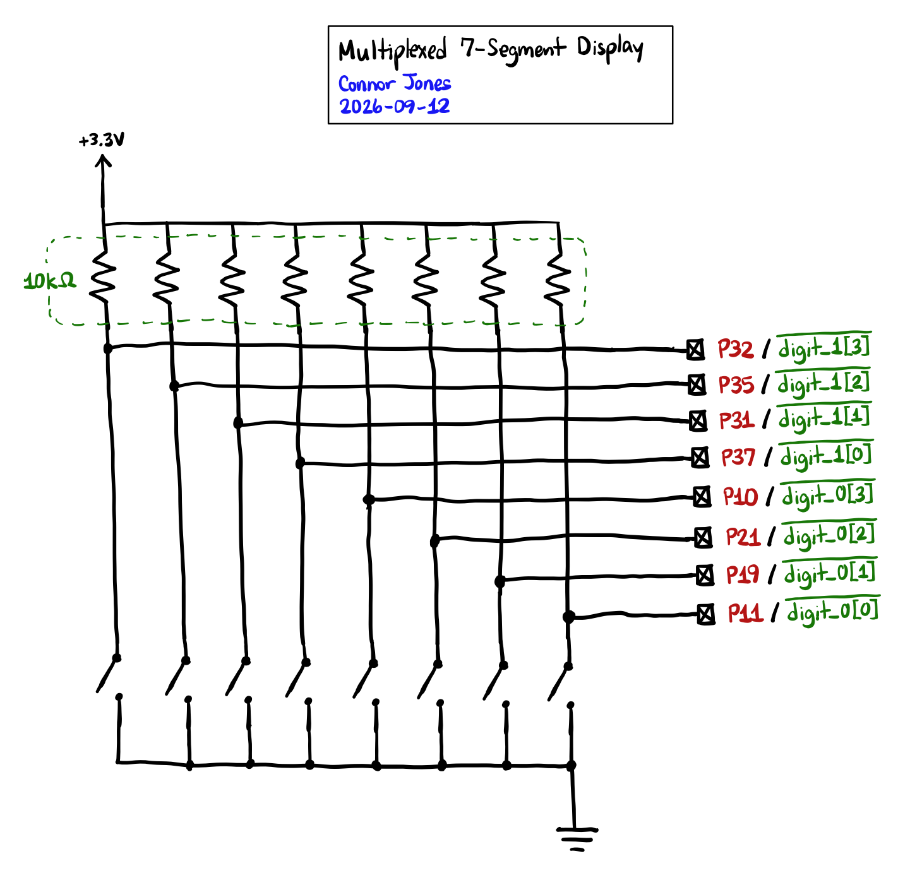
The figures above show the schematics of the circuit used to drive the dual 7-segment display. 3906 PNP transistors are used to switch current through the common anodes of each digit to avoid damaging the FPGA pins with excessive current. Each segment is connected through a current-limiting resistor to further regulate the current going into the I/O pins.
Keypad Scanner
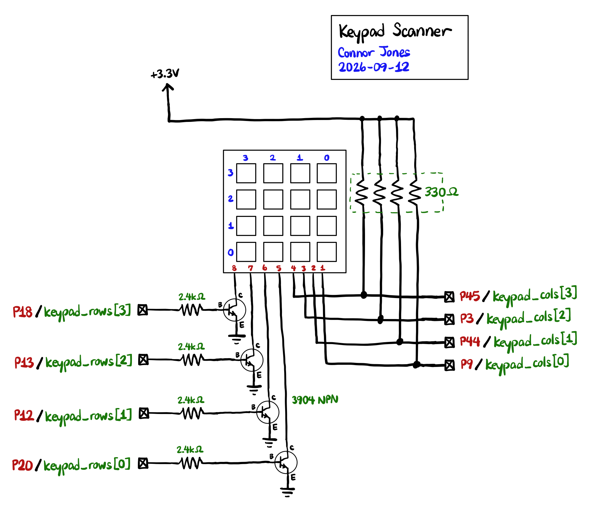
The figure above shows the schematics of the circuit used to read the 4x4 matrix keypad. The setup uses an open-drain output with 3904 NPN transistors so that row pins are floating when not being interrogated. This allows multiple keypresses to be handled in the same column without causing any contention between different voltages.
Results and Discussion
Testbench Simulation
Multiplexed 7-Segment Display Top-Level
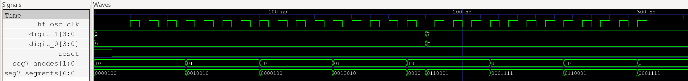
This waveform demonstrates the top-level multiplexed 7-segment module working correctly. In this testbench, MULTIPLEX_PERIOD was set to 8, and we the display refreshing every 8 clock cycles. In addition, the output displays the correct segments for different input digits.
Keypad Top-Level
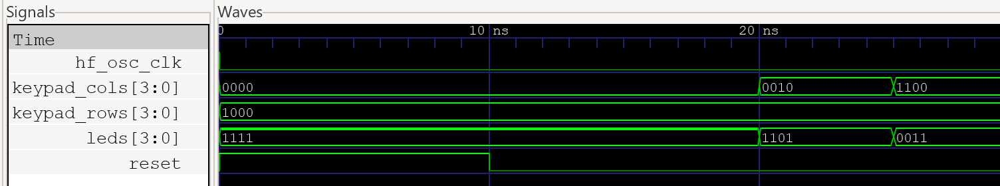
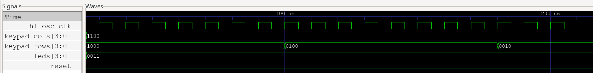
These waveforms demonstrate the keypad top-level module working correctly. leds[3:0] is always the inverse of keypad_cols[3:0] (since it is active low). keypad_rows[3:0] is also working correctly with SCAN_DELAY set to 8. I only tested a couple cases of keypad_rows because the scanner module is tested more rigorously in the following testbench.
Scanner Module
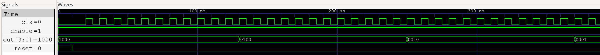
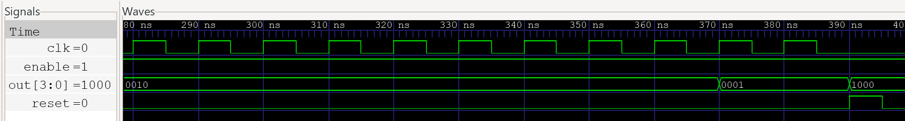
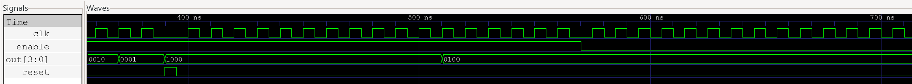
These waveforms demonstrate all four output transitions, enable, and reset features working correctly. In this testbench, SCAN_DELAY was set to 12, so state transitions should happen every 12 clock cycles when enable is HIGH.
Hardware
The design met all the intended specifications in hardware:
- FPGA pins are connected in series to current-limiting resistors with the correct calculations.
- The 7-segment display retains the same brightness, regardless of how many segments are lit.
- There is no bleeding or flickering of the display.
- The scanner signal appears on the LEDs correctly and handles multiple keypresses.
Conclusion
In this lab, I successfully multiplexed a dual 7-segment display and built a scanner module to read inputs from a 4x4 membrane keypad.
Breakdown of time spent in lab:
- Hardware and circuit design: ~5 hours
- Verilog: ~2 hours
- ENTIRE LAB WORKING IN HARDWARE AFTER 7 HOURS
- Documentation and calulcations: ~5 hours
- Lab writeup: ~3 hours
Total time spent: ~15 hours
AI Prototype
Prompt 1:
Write SystemVerilog HDL to time multiplex a single seven segment decoder (that decodes from four bits to a common anode seven segment display) to decode two sets of input bits and drive two sets of seven output bits.
module dual_seven_segment #(
parameter int CLK_FREQ_HZ = 12_000_000
) (
input logic clk,
input logic reset_n,
input logic [3:0] input_a,
input logic [3:0] input_b,
output logic [6:0] segments_a,
output logic [6:0] segments_b
);
logic select;
logic [3:0] decoder_input;
logic [6:0] decoder_output;
// Multiplex the two inputs into the single decoder.
always_comb begin
case (select)
1'b0: decoder_input = input_a;
1'b1: decoder_input = input_b;
endcase
end
// Only one physical decoder is instantiated.
seven_segment_decoder decoder (
.value (decoder_input),
.segments (decoder_output)
);
// Alternate between the two inputs and save each decoded result
// into its respective output register.
always_ff @(posedge clk or negedge reset_n) begin
if (!reset_n) begin
select <= 1'b0;
segments_a <= 7'b1111111;
segments_b <= 7'b1111111;
end
else begin
if (select == 1'b0)
segments_a <= decoder_output;
else
segments_b <= decoder_output;
select <= ~select;
end
end
endmodulemodule seven_segment_decoder (
input logic [3:0] value,
output logic [6:0] segments
);
// Segment ordering:
//
// a
// ---
// f | | b
// -g-
// e | | c
// ---
// d
//
// segments = {a, b, c, d, e, f, g}
//
// Common-anode display:
// 0 = segment ON
// 1 = segment OFF
always_comb begin
case (value)
4'h0: segments = 7'b0000001;
4'h1: segments = 7'b1001111;
4'h2: segments = 7'b0010010;
4'h3: segments = 7'b0000110;
4'h4: segments = 7'b1001100;
4'h5: segments = 7'b0100100;
4'h6: segments = 7'b0100000;
4'h7: segments = 7'b0001111;
4'h8: segments = 7'b0000000;
4'h9: segments = 7'b0000100;
4'hA: segments = 7'b0001000;
4'hB: segments = 7'b1100000;
4'hC: segments = 7'b0110001;
4'hD: segments = 7'b1000010;
4'hE: segments = 7'b0110000;
4'hF: segments = 7'b0111000;
default:
segments = 7'b1111111;
endcase
end
endmoduleSome notes:
- After looking through the code, the output seems reasonable. It uses two registers (
segments_aandsegments_b) to store the decoder outputs for each digit, and alternates between updating each one on every clock cycle. - I probably would have simplified the
always_combblock for settingdecoder_inputinto anassignstatement with a ternary operator. - There is an unused parameter
CLK_FREQ_HZand I’m not sure why it was included in the generated code. ChatGPT acknowledges this parameter is unnecessary and can be removed. - The code compiles and synthesizes successfully.
Prompt 2:
Write SystemVerilog HDL to time multiplex a single seven segment decoder (that decodes from four bits to a common anode seven segment display) to decode two sets of input bits and drive two sets of seven output bits. Use the seven segment decoder and oscillator provided in the attached files.
I attached my 7-segment module from Lab 1 as context for the prompt.
module seg7_mux2 (
input logic clk,
input logic rst_n,
input logic [3:0] digit0,
input logic [3:0] digit1,
output logic [6:0] segments0,
output logic [6:0] segments1
);
logic select;
logic [3:0] mux_digit;
logic [6:0] decoded_segments;
// Alternate between the two displays on each clock cycle.
// Asynchronous active-low reset selects display 0 initially.
always_ff @(posedge clk or negedge rst_n) begin
if (!rst_n)
select <= 1'b0;
else
select <= ~select;
end
// Multiplex the two 4-bit inputs into the single decoder.
always_comb begin
if (select)
mux_digit = digit1;
else
mux_digit = digit0;
end
// Only one seven-segment decoder is instantiated.
seg7 decoder (
.digit (mux_digit),
.segments (decoded_segments)
);
// Route the decoder output to the selected display.
// 7'b1111111 turns every segment OFF on a common-anode display.
always_comb begin
segments0 = 7'b1111111;
segments1 = 7'b1111111;
if (select)
segments1 = decoded_segments;
else
segments0 = decoded_segments;
end
endmoduleSome notes:
- The code generated from this prompt is far more questionable from the first. The module uses combinational logic to output the decoded segments, instead of sequential logic like the previous module.
- Because of this change, the behavior of the module is different. The digit not being multiplexed has all its segments turned off, whereas in the previous module, the digit not being multiplexed would simply retain its previous value.
- This behavior is likely unintended because it defeats the purpose of multiplexing in the first place, which is to drive two sets of 7-bit output pins at once. If only one output is being driven at a time, it’s not multiplexing correctly.
- Once again, I would shorten the
always_combblock multiplexing between the two input digits to a singleassignstatement with a ternary operator. - The code correctly interfaces with the provided
seg7module. - The code synthesizes successfully.